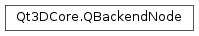

Qt3DCore.QBackendNode¶
Synopsis¶
Functions¶
- def
isEnabled() - def
mode() - def
notifyObservers(e) - def
peerId() - def
sendReply(command) - def
setEnabled(enabled)
Virtual functions¶
- def
sceneChangeEvent(e)
Detailed Description¶
The base class for all Qt3D backend nodes
-
class
PySide2.Qt3DCore.Qt3DCore.QBackendNode([mode=ReadOnly])¶ Parameters: mode – PySide2.Qt3DCore.Qt3DCore::QBackendNode.Mode
-
PySide2.Qt3DCore.Qt3DCore.QBackendNode.Mode¶ The mode for the backend node.
Constant Description Qt3DCore.QBackendNode.ReadOnly Qt3DCore.QBackendNode.ReadWrite
-
PySide2.Qt3DCore.Qt3DCore.QBackendNode.isEnabled()¶ Return type: PySide2.QtCore.boolReturns
trueif the backend node is enabled.
-
PySide2.Qt3DCore.Qt3DCore.QBackendNode.mode()¶ Return type: PySide2.Qt3DCore.Qt3DCore::QBackendNode.ModeReturns the mode of the backend mode.
-
PySide2.Qt3DCore.Qt3DCore.QBackendNode.notifyObservers(e)¶ Parameters: e – PySide2.QtQuick.QSharedPointerNotifies observers of scene change
e.
-
PySide2.Qt3DCore.Qt3DCore.QBackendNode.peerId()¶ Return type: PySide2.Qt3DCore.Qt3DCore::QNodeIdReturns the peer id of the backend node.
-
PySide2.Qt3DCore.Qt3DCore.QBackendNode.sceneChangeEvent(e)¶ Parameters: e – PySide2.QtQuick.QSharedPointerTODO
e
-
PySide2.Qt3DCore.Qt3DCore.QBackendNode.sendReply(command)¶ Parameters: command – PySide2.QtQuick.QSharedPointer
-
PySide2.Qt3DCore.Qt3DCore.QBackendNode.setEnabled(enabled)¶ Parameters: enabled – PySide2.QtCore.boolEnables or disables the backend node by
enabled.See also
PySide2.Qt3DCore.Qt3DCore::QBackendNode.isEnabled()
© 2018 The Qt Company Ltd. Documentation contributions included herein are the copyrights of their respective owners. The documentation provided herein is licensed under the terms of the GNU Free Documentation License version 1.3 as published by the Free Software Foundation. Qt and respective logos are trademarks of The Qt Company Ltd. in Finland and/or other countries worldwide. All other trademarks are property of their respective owners.